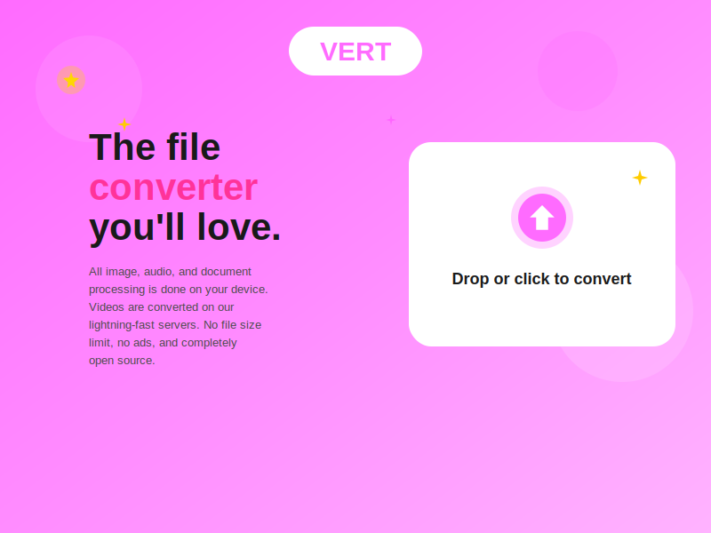

The File Converter You'll Love - Open Source Contribution
VERT is an innovative open-source file conversion tool that processes images, audio, and documents locally on your device, ensuring privacy and speed. Videos are converted on lightning-fast servers with no file size limits, no ads, and completely open source. As a contributor to this project, I've helped enhance the platform's capabilities and improve user experience for thousands of users worldwide.
Local image conversion with support for multiple formats including PNG, JPEG, WebP, GIF, and more.
Convert audio files locally with support for MP3, WAV, OGG, AAC, and other popular formats.
Process documents including PDF, DOCX, CSV, JSON, and more - all on your device.
Server-based video conversion with no file size limits and fast processing speeds.
All image, audio, and document processing happens locally - your files never leave your device.
Completely open source with active community contributions and transparent development.
As an active contributor to the VERT project, I've participated in improving the codebase, enhancing performance, fixing bugs, and helping build features that make file conversion more accessible and efficient for users worldwide. Contributing to open source projects like VERT allows me to give back to the community while continuously learning and growing as a developer.